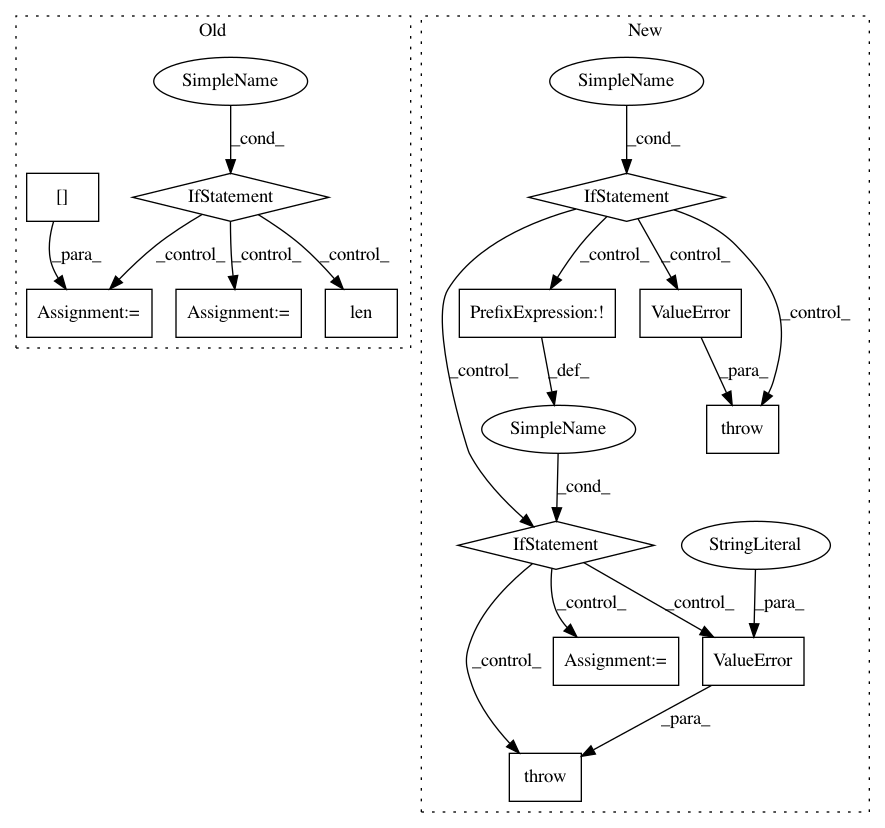

5f6b5d3851d0b719f401eafbfc569420405d1ef3,bokeh/models/formatters.py,FuncTickFormatter,from_py_func,#Any#Any#,215
Before Change
"("conda install -c bokeh flexx" or "pip install flexx")")
argspec = inspect.getargspec(func)
if (len(argspec[0]) - len(argspec[3] or [])) != 1:
raise ValueError("Function `func` must have exactly one positional argument, but %d were supplied." % (len(argspec[0]) - len(argspec[3] or [])))
all_args = argspec[0][:]
func_arg = argspec[0].pop(0)
func_kwargs = dict(zip(argspec[0], argspec[3] or []))
// Set the transpiled functions as `formatter` so that we can call it
code = pyscript.py2js(func, "formatter")
After Change
default_names = argspec.args
default_values = argspec.defaults or []
if len(default_names) - len(default_values) != 0:
raise ValueError("Function `func` may only contain keyword arguments.")
if default_values and not any([isinstance(value, Model) for value in default_values]):
raise ValueError("Default value must be a plot object.")
func_kwargs = dict(zip(default_names, default_values))
// Wrap the code attr in a function named `formatter` and call it
// with arguments that match the `args` attr
code = pyscript.py2js(func, "formatter") + "formatter(%s);\n" % ", ".join(default_names)
In pattern: SUPERPATTERN
Frequency: 3
Non-data size: 13
Instances
Project Name: bokeh/bokeh
Commit Name: 5f6b5d3851d0b719f401eafbfc569420405d1ef3
Time: 2016-08-16
Author: canavandl@gmail.com
File Name: bokeh/models/formatters.py
Class Name: FuncTickFormatter
Method Name: from_py_func
Project Name: keras-team/keras
Commit Name: c25fa38deb4efc5445f64af3ec17eae0eb660d2f
Time: 2017-11-09
Author: francois.chollet@gmail.com
File Name: keras/models.py
Class Name: Sequential
Method Name: add
Project Name: dmlc/gluon-nlp
Commit Name: 489db85647d6de8a42f9fc5162e1e9ef0831800b
Time: 2018-08-02
Author: leonard@lausen.nl
File Name: gluonnlp/data/dataset.py
Class Name: LanguageModelDataset
Method Name: bptt_batchify